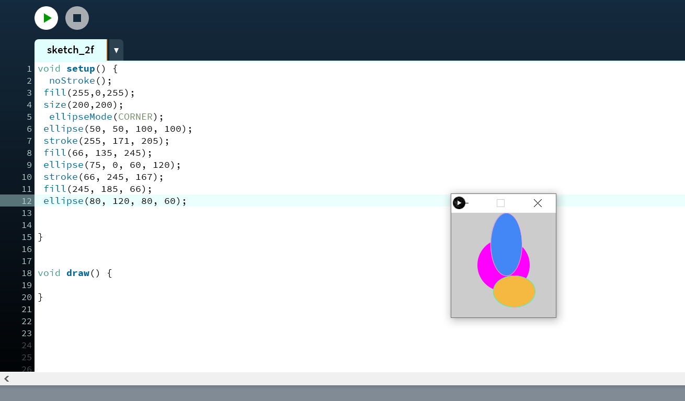
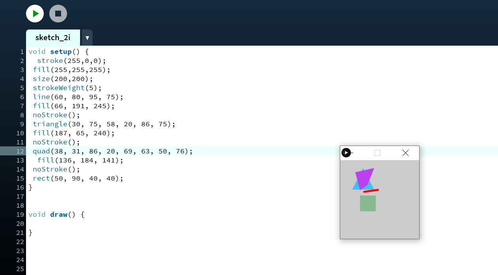
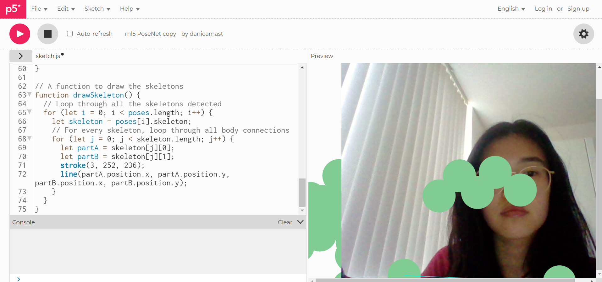

In deze workshop maak ik kennis met Processing, p5.js en computer vision. Met de programma Processing leer ik hoe ik vormen moet maken en hoe ik deze kan animeren. Ook leer ik hoe ik Arduino samen met Processing kan combineren. Met computer vision kan ik beelden identificeren en verwerken op dezelfde manier als de menselijke visie. De computer vision kan onder andere gebruik maken van p5.js. Dit is een programma waarmee je kan experimenten met computer vision technieken.
Exercise 2F
In deze opdracht maak ik kennis met het maken van vormen. Hieronder zie je drie ellipses op verschillende locatie, met verschillende kleuren en groottes.
Exercise 2I
In deze opdracht maak vier verschillende vormen in verschillen kleuren en op verschillende locaties.
Exercise 2O
Hieronder zie je een video waarin ik twee vormen heb gemaakt die interactief zijn.
Exercise 3B
In deze opdracht heb ik met behulp van Arduino het ledje laten branden door met mijn muis door de vierkant heen te gaan.
Exercise 5C
Hieronder zie je een video waarin ik een paarse en blauwe kleur heb toegepast aan de sketch.
Exercise 5E
Opdracht: Skeleton tracking and face-tracking using PoseNet
Het laatste workshop zit er weer op! Deze week ben ik weer een ervaring rijker door met Processing, p5.js en computer vision te werken. De opdrachten waren erg leuk en makkelijk te volgen met duidelijke stappenplan. Vooral de Processing opdrachten met het maken van vormen vond ik erg leuk. Omdat ik al veel met coderen heb gewerkt, was dit ook nog wel te doen. Het scheelt niet veel van HTML/CSS vind ik. De p5.js en computer vision opdrachten vond ik iets lastiger om de codes te begrijpen. Maar gelukkig ben ik er wel uit gekomen!